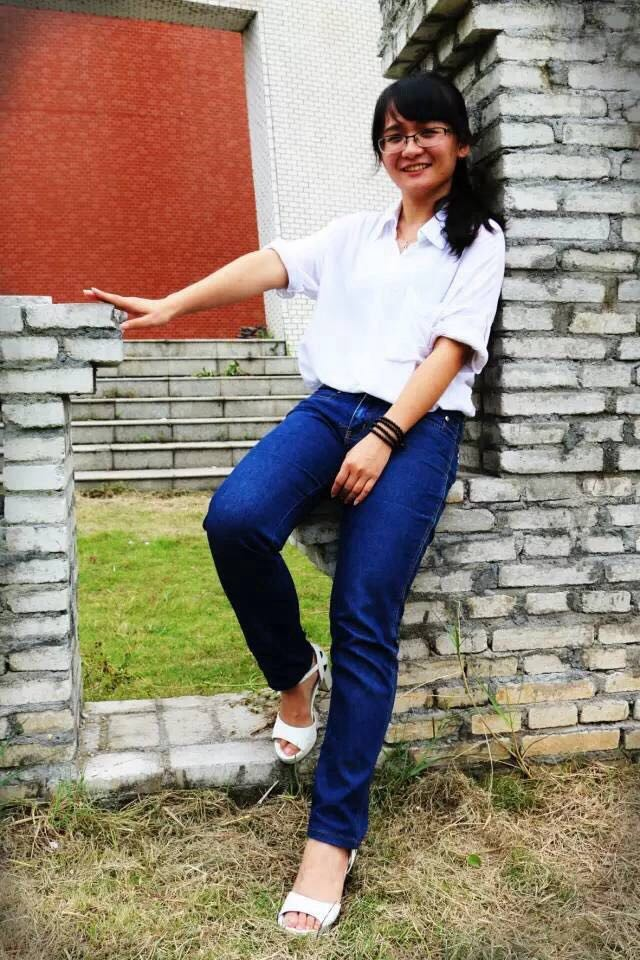

李世颖 林学与风景园林学院

平均绩点和综测排名三年第一，初试和复试第一保研本校风景园林系。获国家奖学金、丁颖奖学金、一等奖奖学金2次和中山四海优秀学生干部奖学金；被授予校级三好学生标兵3次、校级优秀学生干部2次、校优秀共青团员；获亚洲设计学年风景园林最佳设计银奖；校普邦杯设计比赛二等和三等奖；校宿舍架空层规划大赛三等奖；参与《岭南风格的越秀区城市特色研究》和《越秀区古建修复检索图则》课题，研究成果已通过越秀区领导和广州市市长审批。